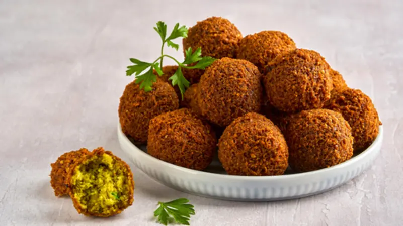

Falafel

Description
Falafel is an arabian fried food made from the chickpeas,
it's papuler in the middle east, it's simple and eazy to make.
ingredients
- Chickpeas:
The main ingredient, soaked and then mashed with the other ingredients.
- Spices:
Include cumin, parsley, garlic, green pepper, and salt.
- Vegetable oil:
Used to fry the falafel until golden brown.
Preparation Method
- Soften the chickpeas:
Soak the chickpeas, then mash them with the spices.
- Form the falafel:
Shape the ingredients into small or oval balls.
- Fry the falafel:
Fry the falafel in hot oil until golden brown.
- Serve the falafel:
Serve hot with tahini, Arabic bread, or salad.
Home